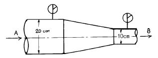
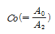
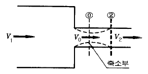
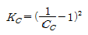
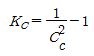
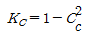
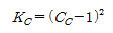
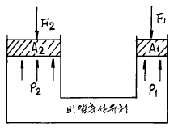

소방설비기사(기계분야) (2004-03-07 기출문제)
1과목: 소방원론
1. 제연계획으로 부적당한 것은?
- 연소중에 있는 실의 개구부를 닫는다.
- 거실에 제연구를 설치한다.
- 제연을 위해 승강기용 승강로를 이용한다.
- 공조 닥트계를 복도 가압으로 바꾼다.
(정답률: 50%)

2. 자연발화성 물질및 금수성 물질에 물을 가할 때 생기는 반응 생성물로서 관계없는 것은?
- 아세틸렌
- 황화수소
- 소석회
- 포스핀
(정답률: 11%)
3. 변전실 화재의 소화제로 적당하지 않은 것은?
- 이산화탄소
- 물
- 분말
- 할로겐화물
(정답률: 64%)
4. 위험물로 분류되어 지는 것은?
- 진한황산
- 압축산소
- 프로판가스
- 포스겐
(정답률: 23%)
5. 화재하중(FIRE LOAD)을 나타내는 단위는?
- kcal/kg
- ℃/m2
- kcal/m2
- kg/kcal
(정답률: 37%)
6. 화재에 대한 설명으로 옳지 않은 것은?
- 인간이 이를 제어하여 인류의 문화, 문명의 발달을 가져오게 한 근본적인 존재이다.
- 불을 사용하는 사람의 부주의와 불안정한 상태에서 발생되는 것을 말한다.
- 불로 인하여 사람의 신체, 생명 및 재산상의 손실을 가져다 주는 재앙을 말한다.
- 실화, 방화로 발생하는 연소현상을 말하며 사람에게 유익하지 못한 해로운 불을 말한다.
(정답률: 60%)
7. 물이 연소유의 뜨거운 표면에 들어갈 때 기름 표면에서 화재가 발생하는 현상은?
- 스롭 오버(Slop Over)
- 보일오버(Boil Over)
- 프러스오버(Froth Over)
- 블레비(BLEVE)
(정답률: 44%)
8. 물속에 넣어 저장하는 것이 안전한 물질은?
- Na
- CS2
- 알킬알루미늄
- 아세톤
(정답률: 52%)
9. 내화구조에 대한 설명으로 옳은 것은?
- 두께 1.2㎝이상의 석고판위에 석면시멘트판을 붙인 것
- 철근콘크리트조의 벽으로서 두께가 10㎝이상인 것
- 철망몰탈바르기로서 두께가 2㎝이상인 것
- 심벽에 흙으로 맞벽치기 한 것
(정답률: 33%)
10. 22℃에서 증기압이 60㎜Hg이고 증기밀도가 2.0인 인화성 액체의 22℃에서의 증기 공기밀도는 얼마인가? (단, 대기압은 760㎜Hg로 한다.)
- 0.54
- 1.08
- 1.84
- 2.17
(정답률: 27%)
11. 연소의 3요소중 점화원(발화원)의 분류로서 기계적착화원으로만 되어 있는 것은?
- 충격, 마찰, 기화열
- 고온표면, 열방사선
- 단열압축, 충격, 마찰
- 나화, 자연발열, 단열압축
(정답률: 63%)
12. 제 4류 위험물의 소화에 가장 많이 사용되는 방법은?
- 물을 뿌린다.
- 연소물을 제거한다.
- 공기를 차단한다.
- 인화점 이하로 냉각한다.
(정답률: 38%)
13. 고층 건축물의 피난계획을 수립할 때의 유의사항으로 적당하지 않은 것은?
- 피난동선은 일상생활의 동선과 일치시킨다.
- 평면계획에 대한 복잡성을 지양하고 단순성에 치중하여 피난동선을 단순화한다.
- 막다른 복도를 만들지 않는다.
- 2 방향보다는 1 방향의 단순한 피난로를 만든다.
(정답률: 62%)
14. 출화란 화재를 뜻하는 말로서 옥내출화, 옥외출화로 구분한다. 이중 옥외출화 시기를 나타낸 것은?
- 천정속, 벽속 등에서 발염착화한 때
- 창, 출입구 등에 발염착화한 때
- 가옥구조에서는 천정판에 발염착화한 때
- 불연천정인 경우 실내의 그 뒷면에 발염착화한 때
(정답률: 61%)
15. 열전도율을 표시하는 단위는 ?
- [Kcal/m2.h.℃]
- [Kcal.m2/h.℃]
- [W/m.deg]
- [J/m3.deg]
(정답률: 32%)
16. 연소에서 연쇄반응은 어느 것에 해당 하는가?
- 연소의 3요소
- 연소의 4요소
- 연소의 시기 및 최소 착화에너지
- 연소의 최성기
(정답률: 35%)
17. 정전기에 의한 발화를 방지하기 위한 예방대책으로 옳지 않은 것은?
- 접지 시설을 한다.
- 습도를 70% 이상으로 유지한다.
- 공기를 이온화 한다.
- 부도체 물질을 사용한다.
(정답률: 40%)
18. 화재의 위험에 관한 사항중 맞지 않는 것은?
- 인화점 및 착화점이 낮을수록 위험하다.
- 착화 에너지가 작을수록 위험하다.
- 증기압이 클수록,비점 및 융점이 높을수록 위험하다.
- 연소범위는 넓을수록 위험하다.
(정답률: 54%)
19. 고층건물내의 연기거동중 굴뚝효과(STACK EFFECT)와 관계가 없는 것은?
- 건물내외의 온도차
- 화재실의 온도
- 건물의 높이
- 층의 면적
(정답률: 50%)
20. 다음 중 통신기기실, 박물관의 소화설비로 가장 적합한 것은?
- 할로겐화합물 소화설비
- 옥내소화전 설비
- 분말 소화설비
- 스프링클러 설비
(정답률: 52%)
2과목: 소방유체역학
21. 수격작용을 방지하는 대책으로 관계가 없는 것은?
- 유속을 높인다.
- 밸브조작을 완만히 한다.
- 펌프에 플라이 휠을 부착한다.
- 서지 탱크를 관선에 설치한다.
(정답률: 63%)
22. 할로겐화합물 소화약제의 특성이라고 할 수 없는 것은?
- 연소 억제작용의 효과가 매우 크다.
- 전기적 절연성이 좋다.
- 인체에 독성이 극히 적다.
- 금속 화재시에는 금속과 반응의 우려가 있다.
(정답률: 38%)
23. 점성에 관한 다음 설명 중 틀린 것은 ?
- 액체의 점성은 분자간 결합력에 관계된다.
- 기체의 점성은 분자간 운동량 교환에 관계된다.
- 온도가 증가하면 기체의 점성은 감소된다.
- 온도가 증가하면 액체의 점성은 감소된다.
(정답률: 38%)
24. 동일한 노즐구경을 갖는 소방차에서 방수압력이 1.5배가 되면 방수량은 몇 배로 되는가?
- 1.22 배
- 1.4 배
- 1.5 배
- 2 배
(정답률: 34%)
25. 이상기체의 폴리트로프 변화 PVn = C에서 n=1인 경우 어느 변화에 속하는가?
- 단열변화
- 등온변화
- 정적변화
- 정압변화
(정답률: 39%)
26. 그림에서 입구 A에서 공기의 압력은 3x105 Pa(절대압력), 온도 20℃, 속도 5 m/s이다. 그리고 출구 B에서 공기의 압력은 2x105 Pa(절대압력), 온도 20℃이면 출구 B에서의 속도는 몇 m/s 인가 ? (단, 공기의 기체상수 R = 287 J/㎏·K이며, 여러가지 손실은 없다고 가정한다.)

- 13.3
- 25.2
- 30
- 36
(정답률: 14%)
27. 점성계수가 0.101 N.s/m2, 비중이 0.85인 기름이 내경 300㎜, 길이 3km의 주철관 내부를 흐르며 유량은 0.0444m3/s이다. 이 관을 흐르는 동안 수두 손실은 약 몇 m 인가? (단, 물의 밀도는 1000 kg/m3이다.)
- 7.1
- 8.1
- 7.7
- 8.9
(정답률: 32%)
28. 392 N/s의 물이 지름 20cm의 관속에 흐르고 있다. 평균 속도는 몇 m/s인가?
- 1.27
- 0.127
- 12.7
- 2.27
(정답률: 27%)
29. 제 2종 분말 소화약제가 열분해 되었을때 생성되는 물질이 아닌 것은 ?
- CO2
- H2O
- H3PO4
- K2CO3
(정답률: 52%)
30. 분말 소화약제는 흡습성이 비교적 큰 화합물이다. 다음중 방습처리에 사용되는 것은?
- 샤포닝제
- 스테아린산염
- 중조
- 계면활성제
(정답률: 18%)
31. 어떤기체 1 kg이 압력 50 kPa, 체적 2.0m3의 상태에서 압력 1000 kPa, 체적 0.2m3의 상태로 변화하였다. 이때 내부에너지의 변화가 없다고 하면 엔탈피(enthalpy)의 증가량은 몇 kJ인가?
- 100
- 115
- 120
- 0
(정답률: 19%)
32. 다음 중 유량측정과 관계가 가장 먼 것은?
- 피에조미터
- 오리피스미터
- 벤츄리미터
- 로터미터
(정답률: 30%)
33. 진공 계기압력이 19kPa, 20℃인 기체가 계기압력 800kPa으로 등온압축 되었다면 처음 체적에 대한 최후의 체적비는? (단, 대기압은 100 kPa 이다.)
- 1/11.1
- 1/9.8
- 1/8.4
- 1/7.8
(정답률: 20%)
34. 분말소화약제의 특성에 관한 설명 중 틀린 것은?
- 차고, 주차장에는 제4종 분말소화약제가 적당하다.
- 제1인산염을 주성분으로 한 분말은 담홍색으로 착색되어 있다.
- CDC(Compatible Dry Chemical)는 포와 함께 사용할 수 있다.
- 분말소화약제는 입도가 20∼25㎛ 일때 최적의 소화효과를 나타낸다.
(정답률: 45%)
35. 타원형 단면의 금속관이 팽창하는 원리를 이용하는 압력 측정장치는?
- 경사미압계
- 수은기압계
- 액주계
- 부르돈 압력계
(정답률: 49%)
36. 유체가 파이프 속을 흐를 때 돌연 축소로 인한 부차손실계수 Kc는 어느 것인가? (단,

는 축소 계수이다.)




(정답률: 25%)
37. 피스톤 A2의 반지름이 A1의 반지름의 2배이며 A1과 A2에 작용하는 압력을 각각 P1, P2 라 하면 평형상태일 때 P1과 P2사이의 관계는 ?

- P1 = 2P2
- P2 = 4P1
- P1 = P2
- P2 = 2P1
(정답률: 23%)
38. 단위가 틀린 것은?
- 1N = 1kg· m/s2
- 1J = 1N ‧ m
- 1W = 1J/s
- 1dyne = 1kgf ‧ m
(정답률: 40%)
39. 깊이 1m까지 물을 넣은 물탱크의 밑에 오리피스가 있다. 수면에 대기압이 작용할 때의 2배 유속으로 오리피스에서 물을 유출할 때 수면에는 얼마의 압력을 가하면 되는가? (단, 손실은 무시한다.)
- 29.4 kPa
- 9.8 kPa
- 19.6 kPa
- 39.2 kPa
(정답률: 22%)
40. 펌프의 양수량 0.8m3/min, 관로의 전 손실수두 5m인 펌프의 중심으로부터 4m 지하에 있는 물을 25m의 송출 액면에 양수하고자 할 때 펌프의 축동력은 몇 kW 인가? (단, 펌프의 효율은 80%이다.)
- 5.56
- 4.74
- 4.09
- 6.95
(정답률: 28%)
3과목: 소방관계법규
41. 옥외탱크저장소 주위에는 공지를 보유하여야 한다. 저장 또는 취급하는 위험물의 최대 저장량이 지정수량의 600배 라면 몇 m 이상인 너비의 공지를 보유하여야 하는가?
- 3
- 5
- 9
- 12
(정답률: 32%)
42. 다음중 위험물의 누출ㆍ비산 방지를 위하여 설치하는 구조로 틀린 것은?
- 플로우트 스위치
- 되돌림관
- 수막
- 안전밸브
(정답률: 21%)
43. 소방용수시설은 당해 지역안의 각 소방대상물로부터 하나의 소방용수시설까지의 거리가 도시계획법에 의한 공업지역은 몇 m 이내가 되도록 설치하여야 하는가?
- 80
- 100
- 120
- 140
(정답률: 46%)
44. 소방시설중 경보설비에 해당하지 않는 것은?
- 누전경보기
- 자동화재속보설비
- 유도등 또는 유도표지
- 비상방송설비
(정답률: 52%)
45. 연결살수설비를 설치하여야 할 소방대상물에서 주요구조부가 내화구조로 되어 있는 경우에는 당해 기준면적에서 제외될 수 있는 부분이 있다. 기준면적에서 제외될수 있는 용도부분이 아닌 것은?
- 욕실 또는 화장실
- 린넨슈우트
- 전기실
- 보일러실
(정답률: 19%)
46. 시.도의 소방업무에 필요한 경비의 일부를 보조하는 국고보조금의 전부 또는 일부의 교부를 취소.정지하거나 그의 반환을 명할 수 있는 사유라고 볼 수 없는 것은?
- 보조금을 보조조건을 위반하여 사용하였을 때
- 보조금을 목적외에 사용하였을 때
- 소방활동장비를 지연시켜 매입하였을 때
- 정당한 사유없이 소방활동장비 및 설비의 전부나 일부를 구입 또는 설치하지 아니한 때
(정답률: 47%)
47. 소방신호의 종류가 아닌 것은?
- 경계신호
- 출동신호
- 발화신호
- 해제신호
(정답률: 45%)
48. 특수위험물 판매취급소의 작업실의 조건으로 틀린 것은?
- 내화구조로 된 벽으로 구획하여야 한다.
- 바닥면적은 6m2이상, 10m2이하로 하여야 한다.
- 출입구에는 갑종방화문을 설치하여야 한다.
- 출입구에는 바닥으로부터 5cm이상의 턱을 설치하여야한다.
(정답률: 21%)
49. 소방용기계.기구 등의 형식승인을 얻은 자에게 6월이내의 기간을 정하여 검정의 중지 또는 시정조치를 명할 수 있는 것은?
- 허가받은 사항을 변경하고자 할 때
- 그 영업의 휴지.재개 또는 폐지신고를 태만히 할 때
- 시험시설 등의 시설기준에 미달되는 때
- 허가를 받지 않고 그 영업을 개시할 때
(정답률: 20%)
50. 위험물 제조소의 건축물의 구조로 잘못된 것은?
- 벽, 기둥, 석가래, 및 계단은 난연재료로 할 것
- 지하층이 없도록 할 것
- 지붕은 가벼운 금속판 또는 불연재료로 덮을것
- 연소의 우려가 있는 외벽은 내화구조로 할 것
(정답률: 37%)
51. 비상조명등을 설치하여야 할 소방대상물의 기준은?
- 층수: 5층이상, 연면적: 3000m2이상
- 층수: 5층이상, 연면적: 4000m2이상
- 층수: 7층이상, 연면적: 3000m2이상
- 층수: 7층이상, 연면적: 4000m2이상
(정답률: 42%)
52. 소방공사감리 대상은 무엇인가?
- 연면적 1000m2 이상의 특수장소
- 공공업무시설
- 10층 이하의 아파트
- 냉동창고ㆍ동식물 관련시설
(정답률: 29%)
53. 극장에서 사용하는 물건 중 방염성능이 없어도 되는 것은?
- 객석용 의자카바
- 무대막
- 구획막
- 암막
(정답률: 29%)
54. 위험물 시설 안전원을 둘수있는 제조소등은 지정수량의 몇배 이상의 위험물을 취급하는 제조소 인가?
- 100배
- 1000배
- 10000배
- 100000배
(정답률: 23%)
55. 소방대상물의 검사를 위한 수단 중 적절하지 못한 것은?
- 관계지역에 출입
- 관계인에게 질문
- 자료의 제출 명령
- 유사 대상물과의 비교
(정답률: 29%)
56. 소방본부장 또는 소방서장이 화재예방이나 소화활동을 위하여 명령할 수 있는 사항이 아닌 것은?
- 불장난, 흡연의 금지 또는 제한
- 재의 처리에 관한 일
- 방치되어 있는 위험물의 이동
- 연소의 우려가 있는 소유자 불명의 물질에 대한 폐기
(정답률: 25%)
57. 소방자동차가 사이렌을 사용할 수 없는 조건은?
- 거리가 먼 화재현장의 출동
- 물차의 화재현장 출동
- 지휘차의 화재훈련
- 펌프차가 진화한 후 소방서에 돌아올 때
(정답률: 49%)
58. 시공 신고를 하여야 할 소방시설 공사의 범위에 속하지 않는 것은?
- 무선통신보조설비의 증설공사
- 자동화재 탐지설비의 신설공사
- 2개 이상의 옥내.옥외소화전설비의 증설공사
- 옥내소화전설비의 신설공사
(정답률: 42%)
59. 위험물중 인화성액체에 해당되는 것은?
- 유기과산화물류
- 알킬알루미늄
- 과산화수소
- 동식물유류
(정답률: 40%)
60. 화재가 발생하여 소방대가 화재현장에 도착할 때까지 그 소방대상물의 관계인이 조치하여야 할 사항으로 적당하지 못한 것은?
- 소화작업
- 교통정리작업
- 연소방지작업
- 인명구조작업
(정답률: 22%)
4과목: 소방기계시설의 구조 및 원리
61. 바닥면적이 700평방미터인 병원에 ABC급 분말소화기를 비치하고자 한다. 최소 A급 몇 단위가 필요한가? (단, 이 건물은 내화구조로서 내장재는 불연재이며, 배치상의 보행거리는 고려 하지 않는다.)
- 3단위
- 4단위
- 5단위
- 6단위
(정답률: 20%)
62. 연결송수관 설비의 방수구에 관한 다음 사항중 옳지 않는 것은?
- 방수구의 호스접결구는 바닥으로부터 높이 0.5m 이상 1m이하의 위치에 설치할 것
- 연결송수관 전용 방수구 또는 옥내소화전 방수구로서 구경 65mm의 것
- 방수구는 볼트식 맹후렌지가 체결되어 개방이 가능한 것
- 방수구는 개폐기능을 가진 것
(정답률: 32%)
63. 연결살수설비의 헤드에서 전용헤드와 스프링클러헤드와의 차이점이 맞는 것은?
- 천장 또는 반자의 각부분으로부터 하나의 살수헤드까지의 수평거리가 전용헤드는 3.5m 이하, 스프링클러헤드는 2.3m 이하이어야 한다.
- 천장 또는 반자의 각부분으로부터 하나의 살수헤드까지의 수평거리가 전용헤드는 2.3m 이하, 스프링클러헤드는 3.5m 이하이어야 한다.
- 가연성가스의 저장 취급시설에 설치하는 헤드는 폐쇄형 전용헤드이어야 한다.
- 가연성가스의 저장 취급시설에 설치하는 헤드는 개방형 전용헤드이어야 한다.
(정답률: 29%)
64. 옥내소화전 설비가 각층 5개씩 설치되어 있을 때 당해 건물의 옥내소화전 전용 수원은 얼마이상 확보하여야 하는가?(2021년 04월 01일 개정된 규정 적용됨)
- 13m3 이상
- 5.2m3 이상
- 2.6m3 이상
- 1.3m3이상
(정답률: 32%)
65. 이산화탄소 소화설비의 집합관에 설치된 안전밸브의 압력 범위로서 적당한 것은?
- 80 ∼ 100kgf/cm2
- 100 ∼ 160kgf/cm2
- 170 ∼ 200kgf/cm2
- 200 ∼ 300kgf/cm2
(정답률: 25%)
66. 고압식 CO2 소화설비의 배관재료 사용에 적합하지 않은 것은? (단, 배관의 호칭이 20mm 이상이다.)
- 이음이 없는 동 합금관으로서 165 kgf/cm2 이상의 압력에 견딜 수 있을 것
- 압력배관용 탄소강관 스케줄 40 이상의 것
- 압력배관용 탄소강관 스케줄 80 이상의 것
- 이음이 없는 동관으로서 165 kgf/cm2 이상의 압력에 견딜 수 있을 것
(정답률: 33%)
67. 하론 소화설비의 축압식 저장용기에 관한 사항으로 옳은 사항은? (단, 21℃의 경우임.)
- 하론 1211은 25kgf/cm2 이상 42kgf/cm2 이하가 되도록 질소가스로 가압한다.
- 하론 1301은 11kgf/cm2 이상 25kgf/cm2 이하가 되도록 질소가스로 가압한다.
- 하론 1301은 25kgf/cm2 이상 42kgf/cm2 이하가 되도록 질소가스로 가압한다.
- 하론 1211은 11kgf/cm2 이상 42kgf/cm2 이하가 되도록 질소가스로 가압한다.
(정답률: 36%)
68. 비행기 또는 회전익 항공기의 격납고에 사용하는 헤드는 다음 중 어느 것인가?
- 이동식 포노즐
- 홈 워터 스프링클러 헤드
- 홈 워터 스프레이 헤드
- 라이트 워터 헤드
(정답률: 35%)
69. 스프링클러 설비의 수신부 기능 중 잘못된 것은?
- 수원 또는 물올림탱크의 저수위 감시 표시기능
- 상용 및 비상전원의 입력여부 확인 표시기능
- 펌프의 작동여부 확인 표시기능
- 펌프 기동용 압력챔버의 압력 확인 표시기능
(정답률: 26%)
70. 펌프의 써징(surging)이 발생될 조건에 관한 사항중 틀리 는 것은?
- 펌프의 양정곡선이 우향강하(右向降下) 구배일때
- 유량 조절밸브가 배관 중 수조(水槽)의 위치 후방에 있을때
- 배관 중에 수조가 있을때
- 배관 중에 기체상태의 부분이 있을때
(정답률: 18%)
71. 제연설비의 닥트 내에 흐르는 풍량을 조절 할수 있는 방법이 아닌 것은?
- 송풍기의 회전수 변화
- 미캐니칼 실의 교체
- 흡입 댐퍼에 의한 교축
- 흡입 베인에 의한 교축
(정답률: 52%)
72. 랙크식 창고에 특수 가연물을 취급하는 경우 스프링클러헤드(화재조기 진압용은 제외)의 설치높이는?
- 2.1m 이하
- 2.5m 이하
- 4m 이하
- 6m 이하
(정답률: 21%)
73. 2개의 방수구역으로서 하나의 제어밸브에 8개씩 드렌처헤드가 설치되어 있는 드렌처설비의 경우 법적인 수원의 수량은?
- 3.2m3 이상
- 6.4m3 이상
- 12.8m3 이상
- 25.6m3 이상
(정답률: 38%)
74. 다음은 옥외소화전 설비의 소화전함에 대하여 설명한 것이다. 옳지 않은 것은?
- 소화전함은 옥외소화전 주위 5m 이내에 설치하여야 한다.
- 옥외소화전이 12개 설치된 경우 10개의 소화전함을 설치할 수 있다.(자체 소방대를 둔 제조소 등임)
- 옥외소화전이 32개 설치된 경우 11개의 소화전함을 설치할 수 있다.(자체 소방대를 둔 제조소 등임)
- 소화전함 표면에는 "옥외소화전" 표지를 하여야 한다.
(정답률: 40%)
75. 청정소화약제 저장용기 설치기준으로 가장 적합한 것은?
- 온도가 40℃ 이하일 것
- 방호구역 내에 설치 시 피난 및 조작이 쉽도록 피난구 부근에 설치
- 방호구역 외에 설치 시 통풍이 잘되는 곳에 설치
- 방호구역 외에 설치할 경우는 필히 갑종방화문으로 구획된 실에 설치
(정답률: 26%)
76. 다음은 상수도 소화용수설비를 설치하여야 하는 소방대상물 및 설치기준이다. 적합하게 표현되지 않은 항목은?
- 연면적이 5,000m2 이상인 건물에 설치
- 상수도가 설치되지 아니 한 지역에 있어서는 채수구를 부착한 소화수조로 대체 가능
- 가스시설, 지하구 또는 지하가 중 터널의 경우에는 설치 제외가 가능함
- 가스시설로서 지상에 노출된 탱크의 저장용량 합계가 30 톤 이상인 것
(정답률: 28%)
77. 제연설비에 사용하는 송풍기의 종류와 관계 없는 것은?
- 다익형 송풍기
- 터보형 송풍기
- 리미트 로드형 송풍기
- 왕복형 송풍기
(정답률: 33%)
78. 구조대의 구조에 대한 설명 중 옳지 않은 것은?
- 구조대의 종류에는 펴는 방법에 따라 경사로 피난하는 방법과 수직으로 피난하는 방법의 두 가지가 있다.
- 경사로 피난하는 방법의 구조대는 둥근형과 각형이 있다.
- 안전, 확실하고 용이하게 사용할 수 있는 견고한 구조로서 실내에 격납하므로 내후성(耐候性)은 요구되지 않으나 내구성(耐久性)은 필요하게 된다.
- 대부분의 구조대는 강재, 면포, 화학섬유로 구성되므로 구성재료가 약해질 우려가 있다.
(정답률: 37%)
79. 자동식 소화기 온도감지 센서의 구조 및 기능에 대한 설명 중 틀린 것은?
- 온도감지 센서는 감지부의 한 구성부분이다.
- 1차 온도 감지시 수신부에서 화재램프가 점등되면서 경보가 울린다.
- 2차 온도에 도달시 가스공급밸브를 차단시킨다.
- 2차 온도에 도달시 수신부에 램프가 점등되고 소화기가 작동되어 소화약제를 방출한다.
(정답률: 37%)
80. 다음 중 스프링클러헤드를 설치하지 않아도 되는 곳은?
- 천장과 반자 사이의 거리가 1m 이하인 부분
- 냉동, 냉장창고의 사무실
- 병원의 수술실, 응급처치실
- 수영장의 탈의실
(정답률: 46%)